Презентация о выполнении индивидуальный проект Этап
2
Информационная безопасность
Акондзо Жордани Лади Гаэл.
Российский университет дружбы народов, Москва,
Россия
21 сентября 2024
Докладчик
- Акондзо Жордани Лади Гаэл.
- студент 4-го курса группы НКНбд-01-21
- 1032215649
- Российский университет дружбы народов
- GitHub
Цель работы
Научиться основным способам тестирования веб приложений
Задание
- Найти максимальное количество уязвимостей различных типов.
- Реализовать успешную эксплуатацию каждой уязвимости.
Выполнение лабораторной работы
Установка необходимых зависимостей
- DVWA требует наличия некоторых зависимостей для работы, таких как
Apache, MariaDB (или MySQL), PHP и несколько модулей PHP.
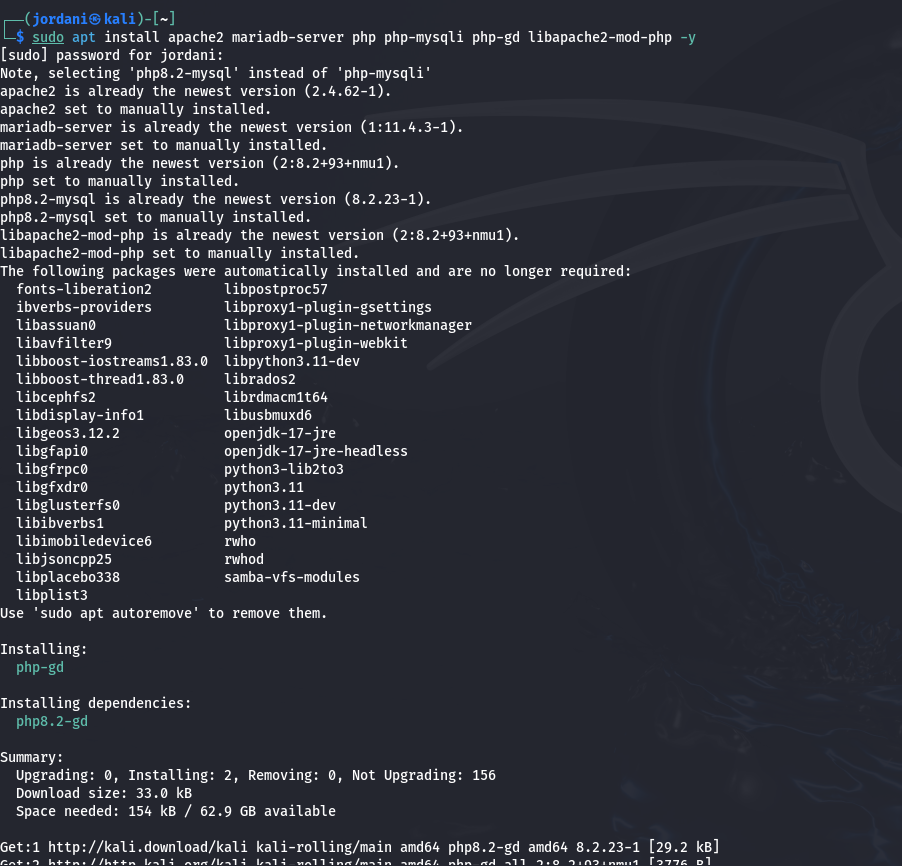
Запуск служб Apache и MariaDB
- Убедился, что службы Apache и MariaDB запущены.
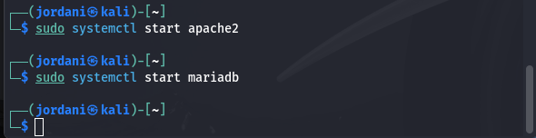
- Чтобы эти службы запускались автоматически при старте системы,
выполнил следующие команды.
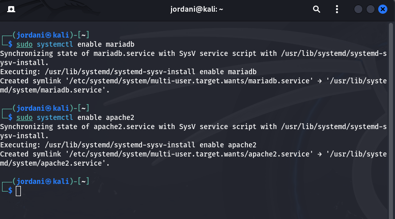
Настройка MariaDB
- Подключусь к MariaDB для создания базы данных и пользователя для
DVWA. Потом в командной строке MariaDB выполнил следующие команды.
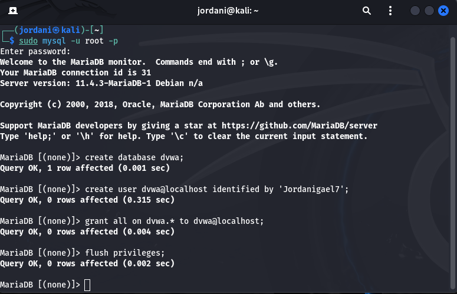
Загрузка и настройка DVWA
- Скачайл последнюю версию DVWA из репозитория GitHub.
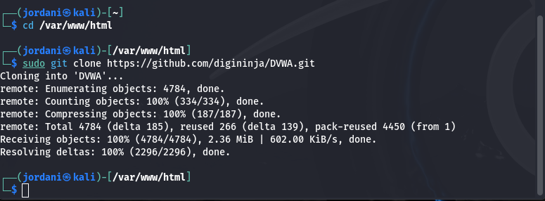
- Потом создал файл конфигурации для DVWA .

- Открыл этот файл для редактирования и внёс изменения в информацию о
базе данных .
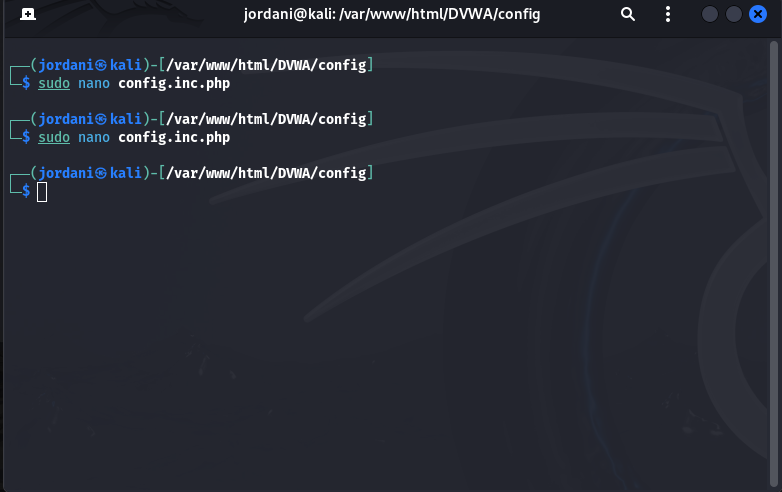
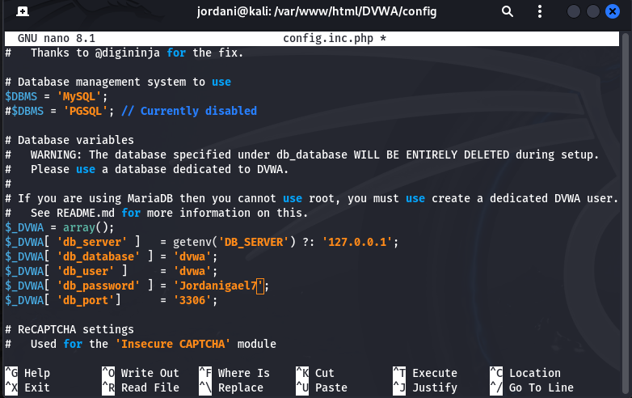
Завершение установки DVWA
- Потос открыл браузер и перешёл по адресу:
http://localhost/DVWA/setup.php. Следовал инструкциям на странице для
завершения установки. По окончании установки, вошёл в DVWA, используя
следующие данные для входа:
Логин: admin
Пароль: password
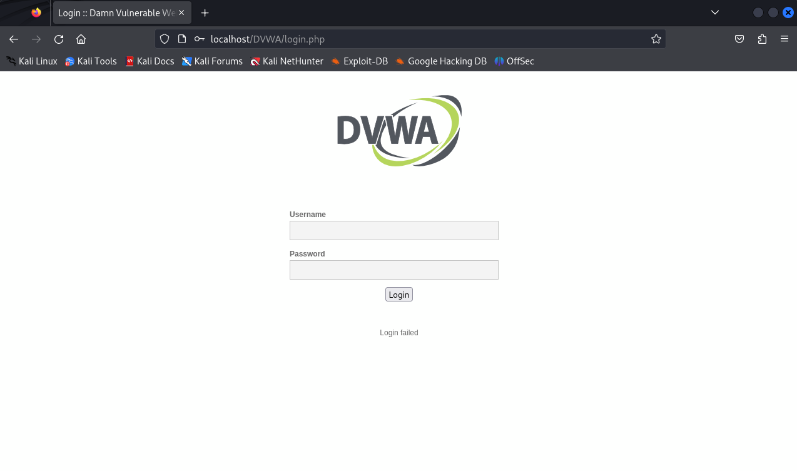
Окончательная настройка
- Проверка настроек базы данных (Setup Check).
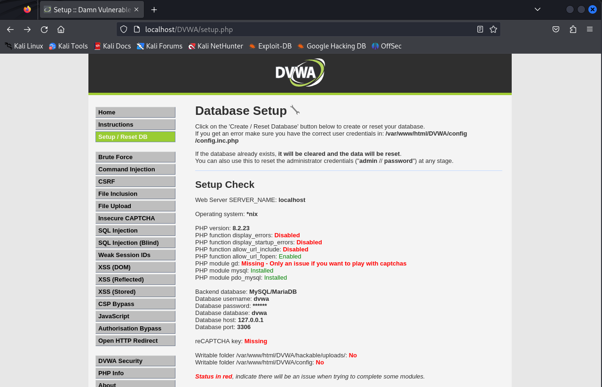
- Уровень безопасности DVWA: Протестировал несколько
уровней безопасности, начиная с Impossible, где все уязвимости
заблокированы, и продолжив с Low, который позволяет изучать наиболее
распространенные уязвимости без каких-либо мер безопасности.
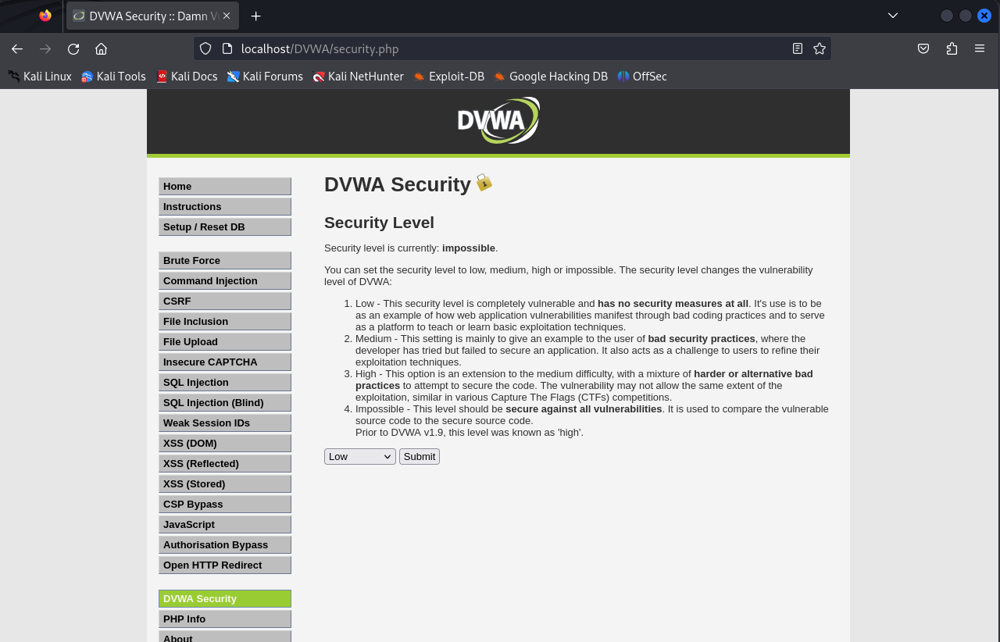
- Изменения в файле php.ini: Параметры
allow_url_fopen = On и allow_url_include = On были включены,
что важно для тестирования уязвимостей, связанных с включением локальных
или удалённых файлов (LFI/RFI).
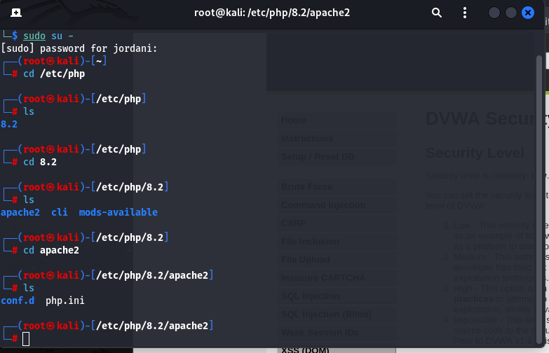
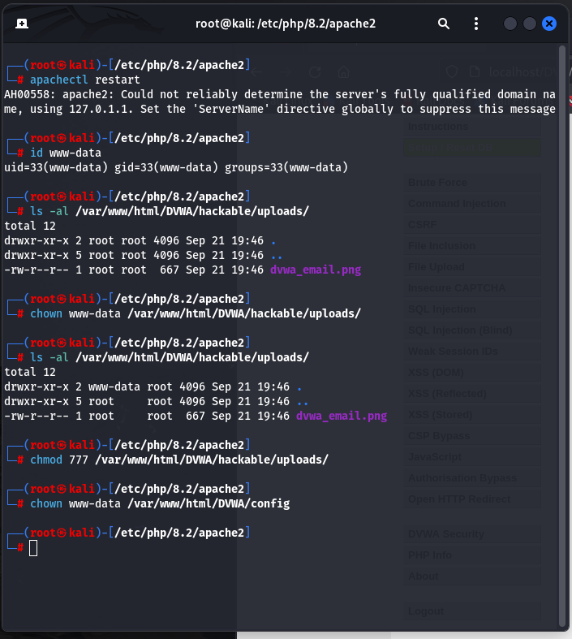
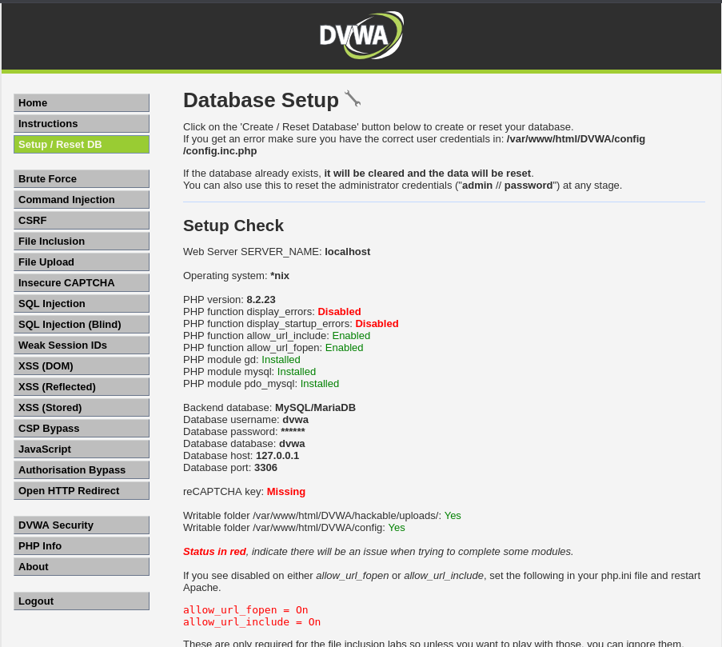
Выводы
На этом этапе я научился устанавливать и настраивать DVWA на Kali
Linux. Я освоил конфигурацию баз данных, работу с Apache и MariaDB, а
также внес необходимые изменения в настройки PHP для тестирования
уязвимостей. Изучение разных уровней безопасности в DVWA позволило
понять, как плохие практики разработки делают приложения уязвимыми для
атак.